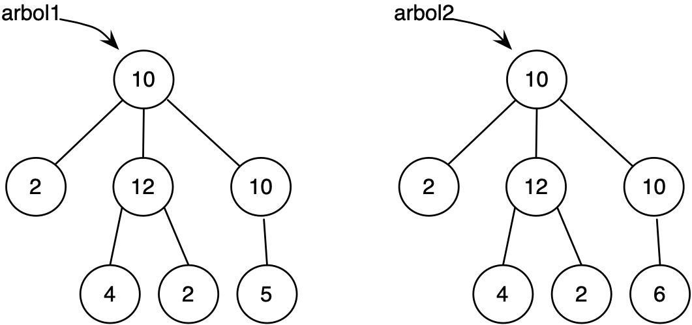

Práctica 7: Árboles¶
Entrega de la práctica¶
Para entregar la práctica debes subir a Moodle el fichero
practica07.rkt con una cabecera inicial con tu nombre y apellidos, y
las soluciones de cada ejercicio separadas por comentarios. Cada
solución debe incluir:
- La definición de las funciones que resuelven el ejercicio.
- Un conjunto de pruebas que comprueben su funcionamiento
utilizando el API
RackUnit.
Ejercicios¶
Importante
Antes de empezar la práctica debes haber estudiado los apartados de árboles genéricos y árboles binarios del tema 4 de teoría.
Copia al principio de la práctica las funciones de las barreras de abstracción de árboles y árboles binarios y utiliza esas funciones en todos los ejercicios cuando estés realizando operaciones sobre árboles.
Ejercicio 1¶
a.1) Escribe la sentencia en Scheme que define el siguiente árbol genérico y escribe utilizando las funciones de la barrera de abstracción de árboles una expresión que devuelva el número 10.

1 2 | |
a.2) Las funciones que suman los datos de un árbol utilizando recursión mutua y que hemos visto en teoría son las siguientes:
1 2 3 4 5 6 7 8 9 | |
Si realizamos la siguiente llamada a la función suma-datos-bosque,
siendo arbol el definido en el apartado anterior:
1 | |
- ¿Qué devuelve la invocación a
(suma-datos-arbol (car bosque))que se realiza dentro de la función? - ¿Qué devuelve la primera llamada recursiva a
suma-datos-bosque?
Escribe la contestación a estas preguntas como comentarios en el fichero de la práctica.
a.3) La función de orden superior que hemos visto en teoría y que realiza también la suma de los datos de un árbol es:
1 2 3 | |
Si realizamos la siguiente llamada a la función, siendo arbol el
definido en el apartado anterior:
1 | |
- ¿Qué devuelve la invocación a
mapdentro de la función? - ¿Qué invocaciones se realizan a la función
+durante la ejecución defold-rightsobre la lista devuelta por la invocación amap? Enuméralas en orden, indicando sus parámetros y el valor devuelto en cada una de ellas.
b.1) Escribe la sentencia en Scheme que define el siguiente árbol binario y escribe utilizando las funciones de la barrera de abstracción de árboles binarios una expresión que devuelva el número 29.

1 2 | |
Ejercicio 2¶
a) Implementa dos versiones de la función (to-string-arbol arbol) que
recibe un árbol de símbolos y devuelve la cadena resultante de
concatenar todos los símbolos en recorrido preorden. Debes implementar
una versión con recursión mutua y otra (llamada to-string-arbol-fos)
con una única función en la que se use funciones de orden superior.
Ejemplo:
1 2 | |
b) Implementa dos versiones de la función (veces-arbol dato arbol) que
recibe un árbol y un dato y comprueba el número de veces que aparece
el dato en el árbol. Debes implementar una función con recursión mutua
y otra con funciones de orden superior.
1 2 | |
Ejercicio 3¶
a) Implementa dos versiones de la función (hojas-cumplen pred arbol)
que recibe un predicado y un árbol y devuelve una lista con todas
aquellas hojas del árbol que cumplen el predicado. Una función con
recursión mutua y otra con funciones de orden superior.
Para evitar complicar la función de orden superior, suponemos que el árbol inicial que pasamos como parámetro no es un árbol hoja.

1 2 3 4 | |
b) Implementa dos versiones del predicado (todas-hojas-cumplen? pred
arbol) que comprueba si todas las hojas de un árbol cumplen un
determinado predicado. Una función con recursión mutua y otra con
funciones de orden superior.
No debes usar la función anterior, tienes que hacer un recorrido por
todo el árbol. Para la función de orden superior puedes usar la
función for-all? implementada en el tema 2.
1 2 | |
Ejercicio 4¶
a) Implementa, utilizando funciones de orden superior, la función
(suma-raices-hijos arbol) que devuelva la suma de las raíces de los
hijos de un árbol genérico.
Ejemplo:

1 2 3 | |
b) Implementa dos versiones, una con recursión mutua y otra con funciones de
orden superior, de la función (raices-mayores-arbol? arbol) que
recibe un árbol y comprueba que su raíz sea mayor que la suma de las
raíces de los hijos y que todos los hijos cumplen también esta
propiedad.
Ejemplos:
1 2 | |
c) Define la función (comprueba-raices-arbol arbol) que recibe un
arbol y que devuelve otro arbol en el que los nodos se han sustituido
por 1 o 0 según si son mayores que la suma de las raíces de sus hijos
o no.
Ejemplos:
1 2 3 | |
Ejercicio 5¶
a) Define la función (es-camino? lista arbol) que debe comprobar si
la secuencia de elementos de la lista se corresponde con un camino
del árbol que empieza en la raíz y que termina exactamente en una
hoja. Suponemos que lista contiene al menos un elemento
Por ejemplo, la lista (a b a) sí que es camino en el siguiente árbol,
pero la lista (a b) no.

Ejemplos: suponiendo que arbol es el árbol definido por la figura
anterior:
1 2 3 | |
b) Escribe la función (nodos-nivel nivel arbol) que reciba un nivel
y un árbol genérico y devuelva una lista con todos los nodos que se
encuentran en ese nivel.

Ejemplos, suponiendo que arbol es el árbol definido por la figura anterior:
1 2 3 4 | |
Ejercicio 6¶
Dado un árbol binario y un camino definido como una lista de símbolos:
'(< > = > > =) en el que:
<: indica que nos vamos por la rama izquierda>: indica que nos vamos por la rama derecha=: indica que nos quedamos con el dato de ese nodo.
Implementa la función (camino-b-tree b-tree camino) que devuelva una
lista con los datos recogidos por el camino.

1 2 | |
Lenguajes y Paradigmas de Programación, curso 2019-20
© Departamento Ciencia de la Computación e Inteligencia Artificial, Universidad de Alicante
Domingo Gallardo, Cristina Pomares, Antonio Botía, Francisco Martínez